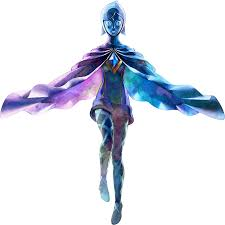

×


Above the Clouds
Step into the boots of the very first Hero. Skyward Sword serves as the chronological beginning of the entire Legend of Zelda timeline. From the floating island of Skyloft to the sealed grounds below, witness the forging of the Master Sword and the eternal cycle of the Triforce.
Gameplay Pillars
Motion Controls
Experience 1:1 sword combat. Every swing, parry, and thrust corresponds to your actual movements, making every encounter a puzzle of precision.
Loftwing Flight
Whistle for your Crimson Loftwing and soar through the sky. Discover hidden islands and dive through the cloud barrier to the surface world.
The Goddess Sword
Guide Link as he upgrades his blade through the Sacred Flames, eventually transforming it into the iconic Master Sword.
The Surface Regions
- Faron Woods: Home to the Kikwi and the ancient Sealed Grounds.
- Eldin Volcano: A fiery landscape inhabited by the treasure-hunting Mogma.
- Lanayru Desert: Use Timeshift Stones to turn back the clock and reveal a lush, technological past.